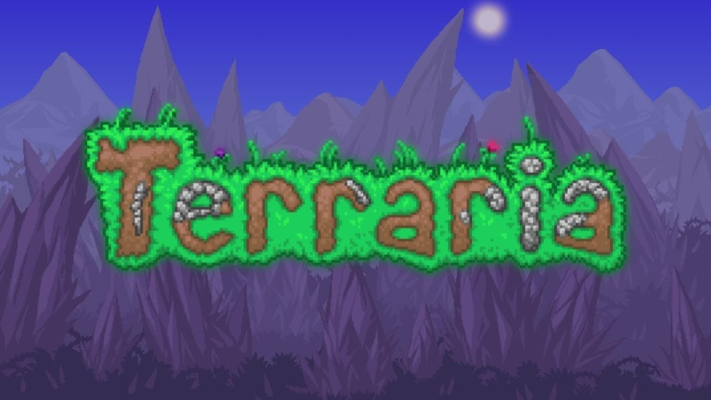
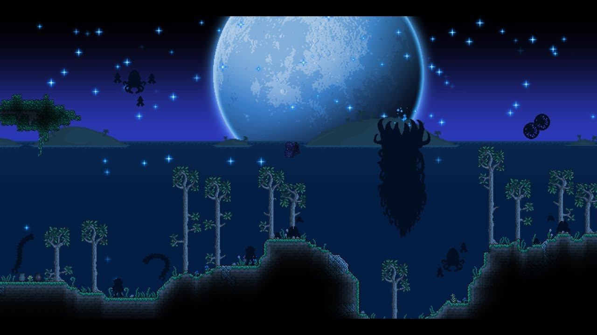
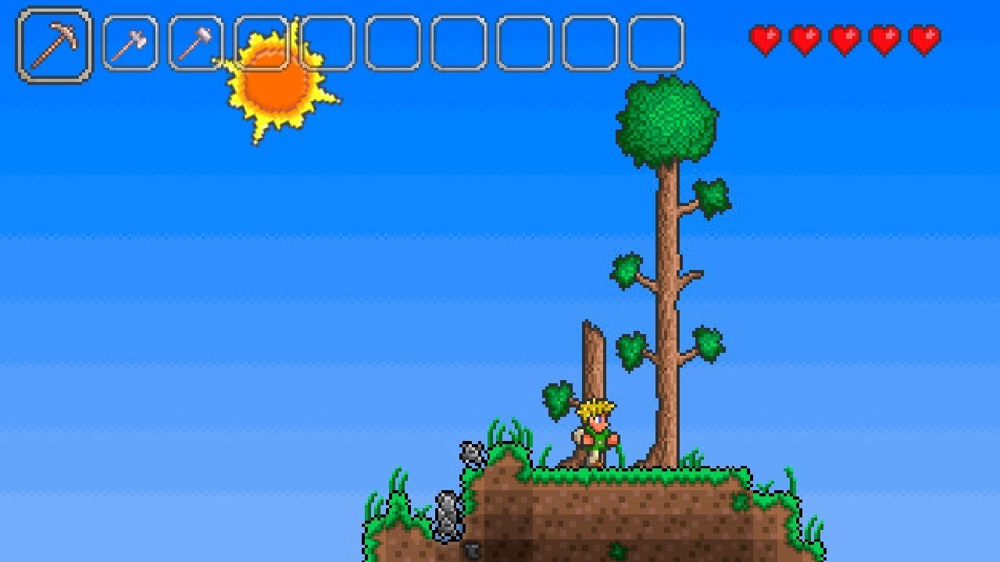
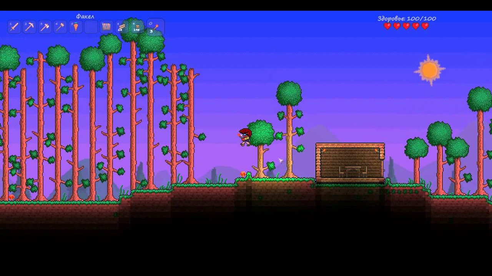
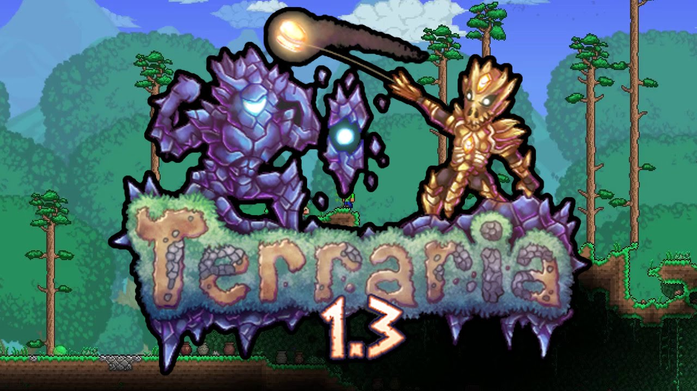
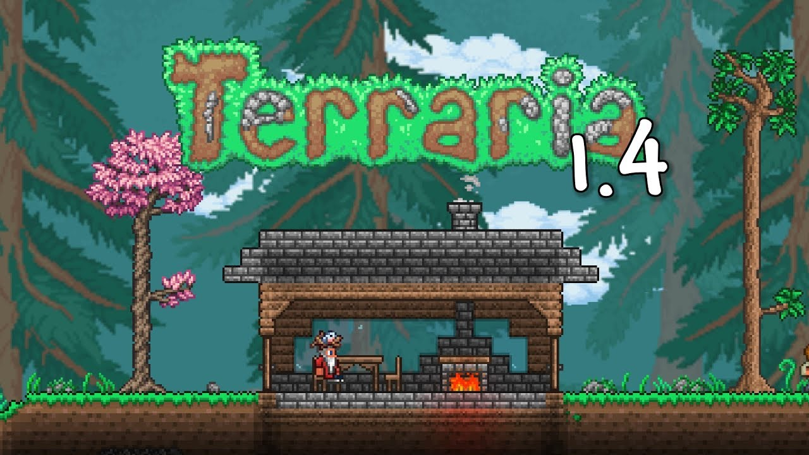

Общая информация
Terraria — компьютерная игра в жанре приключенческой песочницы, разработанная американской студией Re-Logic.
Была выпущена в 2011 году для компьютеров Microsoft Windows с распространением через систему цифровой дистрибуции Steam.
После выхода Terraria была портирована на другие операционные системы для персональных компьютеров и мобильных устройств, а также на игровые приставки.
Компания Codeglue издала игру для мобильных устройств, а 505 Games, Spike Chunsoft и Pipeworks — для игровых приставок.
Студия Spike Chunsoft локализировала игру в Японии, Headup Games — в Германии.

Terraria получила множество положительных оценок игровой прессы.
Рецензенты похвалили реиграбельность, большое количество предметов и существ, делающее исследование игрового мира ещё интереснее.
Кроме того, они одобрили двухмерную графику, сходную с компьютерными играми времён 16-разрядной игровой приставки SNES, и стилизованный под чиптюн саундтрек.
Игровые издания часто сравнивали игровой процесс Terraria с Minecraft.
Terraria добилась огромного коммерческого успеха: по состоянию на 2024 год на всех платформах было продано свыше 58 миллионов копий.
В 2013 году Эндрю Спинкс заявил, что планирует выпустить сиквел — Terraria 2.
В 2015 году Re-Logic анонсировала спин-офф Terraria: Otherworld, однако в 2018 году игра была отменена.

Обновления
После выхода Terraria, разработка игры не прекратилась — Re-Logic до сих пор выпускает обновления, которые дополняют нынешний контент и исправляют различные ошибки.
1 декабря 2011 года было выпущено крупное обновление 1.1, главным нововведением которого стал «сложный режим», а также были исправлены ошибки процедурной генерации игрового мира и улучшено динамическое освещение.
21 февраля 2012 года разработчики заявили, что не будут продолжать активную разработку игры, но позже выпустили окончательное обновление, которое исправило ошибки.
Эндрю Спинкс заявил, что хочет улучшить свои навыки программиста и геймдизайнера вне разработки Terraria, и применить их в другом проекте.
Однако 23 января 2013 года Re-Logic вновь стала разрабатывать Terraria, когда Эндрю Спинкс попросил у сообщества придумать новые идеи для их реализации в будущих обновлениях.

3 апреля 2013 года в преддверии выпуска обновления 1.2 Эндрю Спинкс опубликовал изображения новых биомов и естественных структур.
В его разработке принял участие геймдизайнер и художник Джим Томми Мюре — по его заявлению, он ответственен за обновление спрайтов.
Изначально выход был намечен на июль, но позже он был перенесён на октябрь 2013 года.
Спустя девять месяцев разработки, 1 октября 2013 года, Re-Logic выпустила обновление 1.2, которое изменило почти каждую деталь Terraria.
3 октября 2013 года, в ходе интервью Rock, Paper, Shotgun с Эндрю Спинксом, был анонсирован сиквел — Terraria 2.
Спинкс заявил, что в нём он желает получить бесконечные игровые миры, в которых игрок сможет путешествовать неограниченно.
Позже было выпущено тематическое обновление, посвящённое хэллоуину и рождеству. 2 октября 2014 года Terraria была выпущена в сервисе GOG.com без использования DRM.

26 июня 2015 года было выпущено крупное обновление 1.3, значительно дополняющее существующий контент.
Разработчики учли неудобное подключение к сетевой игре, и они с этом обновлением добавили новые сетевые режимы.
23 июля 2015 года Terraria была выпущена для операционных систем macOS и Linux.
6 сентября 2016 года вышла версия 1.3.3, главным нововведением которой стало улучшение визуальных эффектов от снегопада и добавление песчаной бури.

Летом 2019 года разработчики объявили, что обновление 1.4 с подзаголовком Journey’s End (с англ. — «Конец путешествия») станет последним крупным обновлением для игры — после него Re-Logic будет выпускать только мелкие исправления.
Обновление 1.4 должно добавить в игру 800 новых предметов, новых противников и боссов, улучшенную систему смены погоды и новую систему генерации игрового мира, новый уровень сложности, а также мини-игру в гольф.
